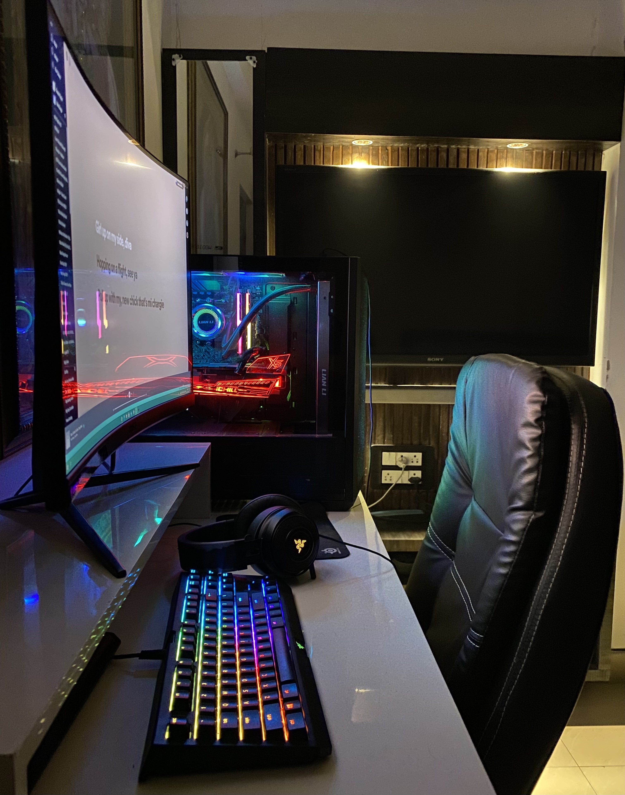
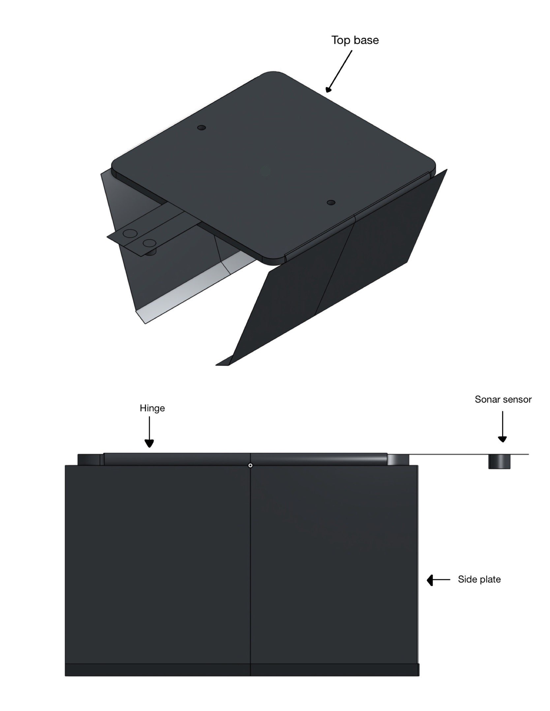
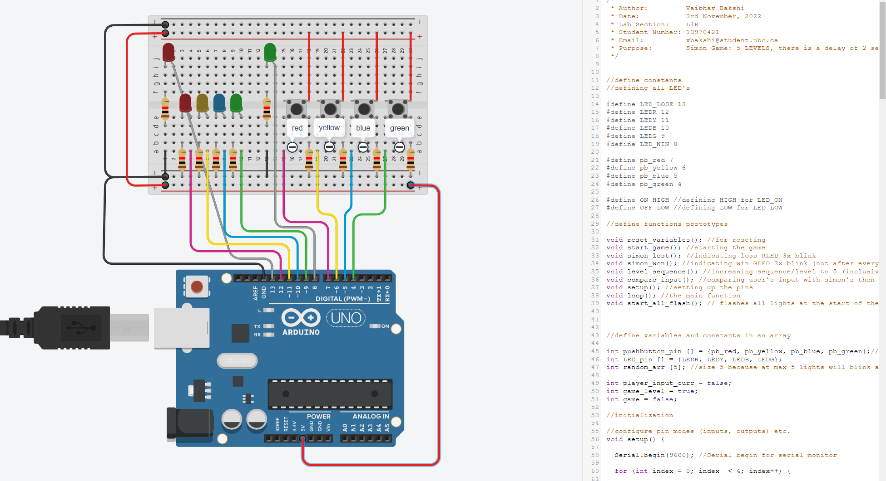

I thoroughly enjoy the hobby of building PCs. I find the process to be both challenging and rewarding, from choosing components to putting them together. I've developed my abilities in this field over time, and I'm proud to say that I've built two computers that are a testament to my abilities.

I've always been fascinated by SONAR technology because it can be used for underwater mapping and navigation. So, I made the decision to use an Arduino board and a SONAR sensor to create my own SONAR system.

I contributed to the design and construction of an autonomous claw. I gained knowledge of sonar sensors, cutting tools, and servo mechanisms while designing the 3D parts for the project. I improved my teamwork and 3D design skills and my knowledge of mechanical engineering, through this experience. I overcame obstacles and used creative solutions to ensure the project's success.

Using MySQL and Python, I created a thorough database management system for hospitals and jails. Users can easily add new records, read existing records, update records, and delete records as necessary with the help of this system. The system's login and authentication features are among its most crucial components. Users can use this feature to securely access the system and guarantee that only authorised people have access to sensitive data. Users can effectively and efficiently manage records thanks to the system's CRUD (Create, Read, Update, Delete) operations. The system makes it simple to keep records up-to-date, whether it's adding new patient or inmate information, updating records with new information, or deleting records that are no longer needed.

Used TinkerCad simulation to create a Simon game as a project for the APS160 course. Players must repeat a series of coloured lights in the right order in this memory-based game. A lab-provided circuit was used to implement the game, which was then simulated in TinkerCad. The project required programming the microcontroller to manage the game logic. My understanding of circuit design, programming microcontrollers, and problem-solving and critical thinking abilities all improved as a result of the project. You can try the simulation!

I created some games using Python, including Tic-Tac-Toe, a bat-and-ball game, and a music game. To create the 3x3 space where the user could enter "X" or "O", I used lists. In the Bat-ball game, the CPU uses a random function and the user inputs a number between 0 and 6. If the CPU guesses your number or vice versa, the user and CPU are out, and the player with the most runs wins. The user must identify the song from one or two lines of lyrics displayed in the music game. There are several levels, and a maximum of two hints are permitted. Check out the code!